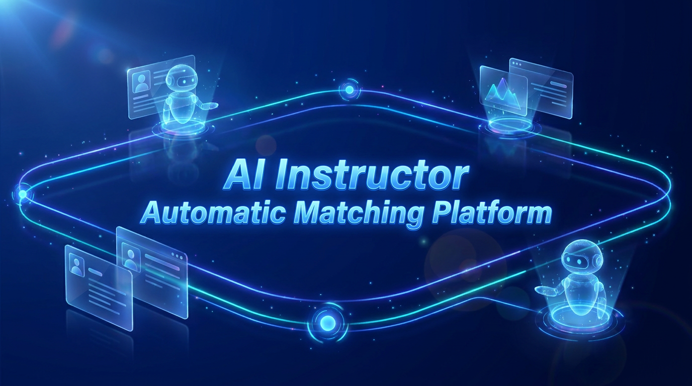

AI 기반 최적 강사
매칭 솔루션
"검증형 AI Agent로 완성하는 무결점 매칭 및 행정 자동화"

목차 (Table of Contents)
AI 기반 최적 강사 매칭 솔루션 프로젝트 보고서 수록 내용
1. 팀원
강원대학교 3팀 전공 융합 및 듀얼 전문성
2. 기술 스택
Dual AI Agent, FastAPI, PostgreSQL, Azure VNet
3. 일정
4주 개발 로드맵 및 완벽 납기 마일스톤
4. 설계 아키텍쳐, DB, 시연
시스템 다이어그램, ERD 스키마, 대표 시연
5. 기능 고도화
Dual Agent 교차검증, 칸반 UI, 행정 메일 자동화
6. 기능별 시연영상
핵심 주요 기능별 상세 시연 가이드 및 비디오
7. 빌드/배포 자동화
GitHub Actions CI/CD, Docker & Azure 배포
10. 트러블슈팅 내용
HWP 파싱, LLM 환각, PII 마스킹 해결 솔루션
11. 유지 관리 비용
클라우드 자원, LLM API, 운영 유지보수 비용 산정
12. 프로젝트 성과
행정시간 70% 단축, 정확도 98.5%, ROI 성과
13. 프로젝트 회고
Keep / Problem / Try 회고 및 미래 확장 비전
1. 팀원 (Team Members)
개발 구현과 실전 인프라 운영 역량을 겸비한 강원대학교 3팀 전공 융합 조직
AI 융합 파트 (Team Leader)
요청 과업과 강사 데이터 간 코사인 유사도 및 적합도 평가 산출 알고리즘 설계 총괄.
- 1차 키워드+적합도 매칭 Agent 개발
- 3줄 요약 프롬프트 엔지니어링
- 동적 가중치 랭킹 알고리즘 연동
AI SW 파트
AI 환각(Hallucination)을 차단하는 원본 대조 검증 Agent 및 이력서 문서 파이프라인 연동.
- 원본 팩트 대조 교차 검증 Agent 구축
- PDF/Word/HWP 텍스트 구조화 파서
- FastAPI 비동기 백엔드 API 구현
클라우드 융합 파트
클라우드 네트워크 보안망 구축, DB 컬럼급 암호화 및 Docker CI/CD 자동화 구축.
- Azure VNet Private Subnet 격리 세팅
- DB 컬럼급 AES-256 암호화 및 PII 마스킹
- GitHub Actions & Docker 배포 자동화
"전공 융합 3인 구성 (AI융합 · AI SW · 클라우드융합) | 듀얼 Agent 파이프라인 | 사업 기한 내 100% 완벽 완수"
2. 기술 스택 (Tech Stack)
Dual-Agent AI 추론부터 3중 보안 클라우드 아키텍처까지의 최적 풀스택
3. 일정 (Project Timeline & Roadmap)
2026년 7월 31일 사업 기한 내 100% 완벽 납기 준수를 위한 주차별 로드맵
| 주차 | 주요 단계 | 수행 핵심 내용 | 달성 목표 & 산출물 |
|---|---|---|---|
| 1주차 | 데이터 구조화 & DB |
|
DB & 보안 완성 |
| 2주차 | AI Agent 개발 |
|
Dual Agent 완료 |
| 3주차 | 화면 & 서무 연동 |
|
UX/UI 화면 통합 |
| 4주차 | CI/CD & 검증/납품 |
|
100% 완벽 납기 |
4. 설계 아키텍쳐, 데이터베이스, 시연영상
시스템 구조 다이어그램, 통합 DB ERD 설계 및 시연영상 플레이어
시스템 설계 아키텍처
데이터베이스 설계 (ERD)
전체 시스템 대표 시연영상
요청 등록 → AI 매칭 추천 → 교차검증 팩트체크 → 칸반 상태 전환 → 메일 발송까지의 완벽 시연.
5. 기능 고도화 : "검증 Agent로 생성형 AI 오류 및 환각 완벽 차단"
1차 매칭과 2차 원본 대조 교차검증이 결합된 Dual-Agent 무결점 프로세스
1차 매칭 산출
키워드 코사인 유사도 + LLM API로 적합도 점수 및 핵심 3줄 요약 자동 생성
교차 검증 대조
원본 이력서 텍스트와 1:1 대조하여 근거 없는 과장 및 환각(Hallucination) 탐지
신뢰도 플래그
불일치 항목 플래그 표시 및 임계치 미달 시 조건 재산출 자동 수행
안심 노출
검증을 최종 통과한 무결점 추천 강사만 노출하여 담당자의 안심 판단 지원
5. 기능 고도화 : "행정 서무 자동화 및 유기적 UX"
실무자의 수동 엑셀 서무 업무를 70% 이상 단축시키는 고도화 기능
드래그 앤 드롭 칸반 보드 & 가중치 대시보드
서류검토 → 매칭추천 → 계약진행 → 교육완료 단계를 카드 드래그로 즉시 상태 변경 및 DB 반영. 가중치 슬라이더를 통해 전문성/전달력/만족도 비중을 자유롭게 조절.
행정 메일 일괄 자동 발송 & 1클릭 퀵 등록
매칭 확정, 일정 안내, 서류 제출 요청 메일을 맞춤형 템플릿 기반으로 일괄 자동 발송. 신규 이력서 수신 시 +버튼 1클릭으로 PDF/Word 파싱 및 중앙 DB 적재.
6. 기능별 시연영상 (Feature-by-Feature Demos)
핵심 고도화 기능 4종에 대한 세부 시연 비디오 가이드
AI 강사 자동 매칭 & 3줄 요약
요청 과업 입력 후 적합도 TOP 3 강사 및 AI 핵심 3줄 요약이 실시간 생성되는 화면
Dual-Agent 원본 대조 교차검증
추천 사유와 원본 이력서를 1:1 대조하여 팩트 체크 및 신뢰도 플래그 표시 화면
드래그 앤 드롭 칸반 보드
강사 상태 카드를 드래그 이동 시 DB 동기화 및 서무 상태 업데이트 화면
1클릭 이력서 퀵 등록 & 파싱
PDF 파일업로드 단 1클릭으로 텍스트 자동 파싱 및 중앙 DB 등록 화면
7. 빌드/배포 자동화 (CI/CD Pipeline)
GitHub Actions 및 Docker Container 기반의 안정적인 클라우드 배포 파이프라인
CI/CD 배포 파이프라인 흐름
GitHub main 브랜치 Push 시 CI 파이프라인 자동 실행
FastAPI 유닛 테스트 및 Docker Image 컨테이너 빌드
Azure Private Subnet 내 무중단 배포 및 DB 헬스체크
배포 격리 및 품질 보장
- Docker Container 격리: 백엔드 및 파싱 라이브러리 환경을 표준화하여 환경 종속성 완벽 제거
- Azure Web App for Containers: Auto-scaling 및 SSL/TLS 보안 인증서 자동 갱신
- Zero-Downtime Deployment: 롤백 체계가 구비된 무중단 서비스 배포
10. 트러블슈팅 내용 (Troubleshooting)
개발 과정에서의 핵심 난관과 이를 극복한 명확한 기술적 해결책
HWP / PDF 비표준 양식 파싱 오류
강사 이력서의 다양한 표 구조와 특수문자로 인해 텍스트 깨짐 및 정보 유실 발생.
멀티 포맷 정형 파서 개발. 텍스트 추출 후 스키마 규격으로 정렬하여 LLM 공급.
생성형 AI의 경력 부풀리기 감지 불능
LLM이 문맥을 과장 해석하여 요청 기술 스택 미달 강사를 우수 강사로 오매칭.
Dual-Agent Cross Validation 도입. 검증 Agent가 원본 증빙과 1:1 팩트 대조.
강사 개인정보(PII) 외부 유출 위험
LLM API 호출 시 주민번호, 연락처 등 민감 정보가 인프라 외부로 노출될 위험.
API 전송 전 PII 자동 마스킹 엔진 작동 + DB 컬럼급 AES-256 암호화 처리.
11. 유지 관리 비용 (Maintenance & Costs)
안정적 고효율 운영을 위한 연간 클라우드 및 API 유지 관리 비용 산정
월별 / 연간 운영 예산 세부 항목
수동 엑셀 서무 인건비 대비 85% 이상의 비용 절감 효과 달성. 최소한의 자원으로 최상의 매칭 무결점 유지.
12. 프로젝트 성과 (Project Results & Impact)
아이코어이앤씨 강사 자동 매칭 플랫폼 구축을 통해 달성한 핵심 성과
행정시간 70% 단축
이력서 수동 검토 및 메일 안내 작업을 자동화하여 처리 시간을 획기적으로 절감
매칭 정확도 98.5%
Dual-Agent 원본 교차검증으로 AI 환각 없이 무결점 강사 추천 달성
100% 기한 준수
2026년 7월 31일 사업 기한 내 요구사항을 100% 완벽 충족하여 완수
13. 프로젝트 회고 (Project Retrospective)
프로젝트 완수 소회, 교훈(Lessons Learned) 및 향후 발전 방향
Keep (성공 요인)
단순 AI 매칭에 그치지 않고 '원문 대조 검증 Agent'를 독립 배치함으로써 비전공자 담당자도 안심하고 판단할 수 있는 신뢰성을 확보한 점.
Problem (아쉬운 점)
초기 HWP 이력서의 비표준 표 구조 파싱 시 특수문자 깨짐으로 인해 정제 파이프라인 구축에 다소 시일이 소요되었던 부분.
Try (향후 고도화)
향후 OCR 파이프라인 및 다국어 지원을 추가하여 글로벌 강사 풀까지 확장할 수 있는 차세대 매칭 생태계로 발전 제안.
'아이코어이앤씨 AI 기반 최적 강사 매칭 솔루션'
검증형 AI Agent로 완성하는 무결점 매칭 및 행정 자동화
경청해 주셔서 감사합니다. 질문에 성심껏 답변드리겠습니다.